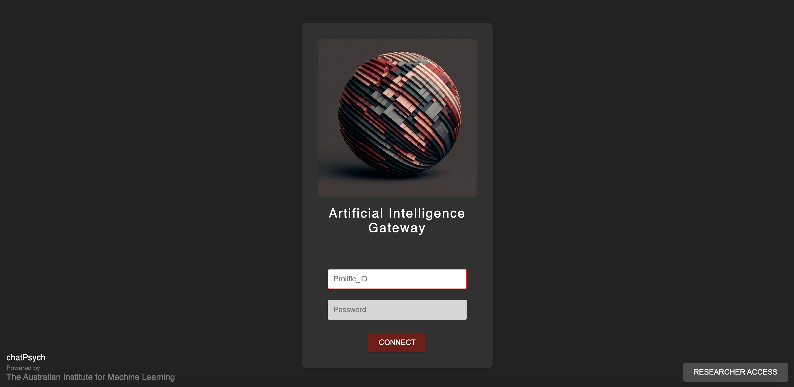
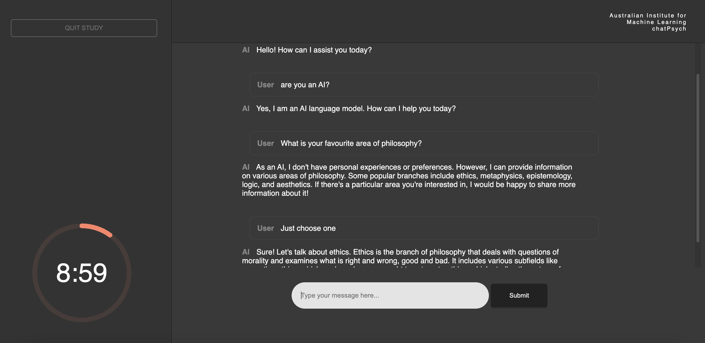

Oliver C. Lack
Lead Developer
About
chatPsych is an open-source interface for human–AI research. It leverages widespread AI models and aims to improve the quality of research in HCI/HRI by offering an easily accessible tool for novel experiments with AI systems.
The codebase offers pre/post survey programming, randomisation of AI agent conditions, and various data collection points beyond user input prompts and model token outputs.


Stimulus representativeness and psychological realism in relation to interactions with widespread AI systems is emphasised.
chatPsych offers a method for experimental designs that require prompt engineering, manipulating model hyperparameters, basic model comparison, content moderation, and more.
For usage, questions or collaborations, please cite/contact the developer:
Oliver Lack
oliver.lack@adelaide.edu.au | oliver@oliverlack.com
oliverlack.com
Researcher Profile
Australian Institute for Machine Learning (AIML) | School of Psychology
Adelaide University, Australia
Tutorial
Video tutorial pending...
Written tutorial included in upcoming research methods paper.
For workshops, custom setup, or in-depth tutorials reach out to contact in the About section.
Playground
Login
Prolific_ID = 'your name'
Password = castle
Researcher Login
Researcher_Username = admin
Researcher_Password = admin

Downloads
chatPsych is available on GitHub. It is free and open-source and we encourage community-driven improvements.
chatPsych Source CodeThe repo includes end-to-end deployment instructions for non-technical researchers
License
MIT License
Copyright (c) 2025 Oliver Lack
Permission is hereby granted, free of charge, to any person obtaining a copy
of this software and associated documentation files (the "Software"), to deal
in the Software without restriction, including without limitation the rights
to use, copy, modify, merge, publish, distribute, sublicense, and/or sell
copies of the Software, and to permit persons to whom the Software is
furnished to do so, subject to the following conditions:
The above copyright notice and this permission notice shall be included in all
copies or substantial portions of the Software.
THE SOFTWARE IS PROVIDED "AS IS", WITHOUT WARRANTY OF ANY KIND, EXPRESS OR
IMPLIED, INCLUDING BUT NOT LIMITED TO THE WARRANTIES OF MERCHANTABILITY,
FITNESS FOR A PARTICULAR PURPOSE AND NONINFRINGEMENT. IN NO EVENT SHALL THE
AUTHORS OR COPYRIGHT HOLDERS BE LIABLE FOR ANY CLAIM, DAMAGES OR OTHER
LIABILITY, WHETHER IN AN ACTION OF CONTRACT, TORT OR OTHERWISE, ARISING FROM,
OUT OF OR IN CONNECTION WITH THE SOFTWARE OR THE USE OR OTHER DEALINGS IN THE
SOFTWARE.
Adaptions
Wordie-AI
Wordie-AI demonstrates an experiment that assigns participants to AI agent files with different temperatures, models, and system messages. It implements a 'Wordgame', similar to an open-ended version of 20-questions.
Wordie-AI CodebaseFalse-Memory Experiment
This iteration demonstrates the use of chatPsych for research that investigates false memories and their formation through conversational agents.
False-Memory ExperimentDevelopers
Lead: Oliver C. Lack
Institutional Support: Australian Institute for Machine Learning & School of Psychology, University of Adelaide
We welcome collaboration and pull requests. Driving innovation through open-source practices ensures the platform grows with new AI features and research needs.
For usage, questions or collaborations, please cite and contact:
Oliver Lack
oliver.lack@adelaide.edu.au | oliver@oliverlack.com
oliverlack.com
Researcher Profile
Blog
Our blog will feature usage guides, updates on newly integrated AI models, tutorials for lab-based or online expansions, and posts highlighting researchers’ findings.
We encourage the community to contact us about adaptions, updates, and research successes.